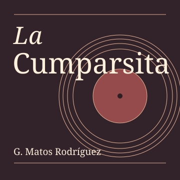

Канженге
Один из ранних способов танцевать танго. В школе канженге изучают как самостоятельную тему.
Танго сформировалось по обе стороны Рио-де-ла-Платы — в Буэнос-Айресе и Монтевидео. Музыка и парный танец выросли из встреч разных городских сообществ.
Один из ранних способов танцевать танго. В школе канженге изучают как самостоятельную тему.

Мелодия из Уругвая, чья история начинается со студенческого карнавального марша.
Слово обозначает и музыкально-танцевальный жанр, и вечер, на котором танцуют.
Танец передаётся от пары к паре на уроках, встречах и милонгах. Совместная заявка Аргентины и Уругвая о традиции танго вошла в список нематериального культурного наследия ЮНЕСКО в 2009 году.